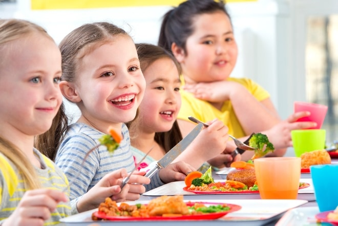

‘’Talent Ontwikkeling Plezier’’
Onze visie op talentontwikkeling en plezier in de kinderopvang is geworteld in het geloof dat ieder
kind unieke capaciteiten bezit die aandacht en aanmoediging verdienen. Wij streven ernaar een
omgeving te creëren waarin elk kind wordt aangemoedigd om zijn of haar talenten te verkennen, te
ontwikkelen en te omarmen.
In onze pedagogische benadering staat plezier centraal. Wij zijn overtuigd dat leren en plezier
onlosmakelijk met elkaar verbonden zijn. Het vormgeven van een inspirerende omgeving, waar
nieuwsgierigheid wordt gestimuleerd en waar ieder kind de vrijheid heeft om zijn of haar eigen
interesses te verkennen, staat bij ons hoog in het vaandel. Door middel van boeiende en speelse
activiteiten streven wij ernaar een positieve leeromgeving te scheppen, waar kinderen niet alleen
kennis opdoen, maar tevens vreugde en enthousiasme ervaren gedurende het gehele proces.
Ons team zet zich in voor het nauwlettend observeren en begrijpen van de individuele interesses en
behoeften van ieder kind. In samenwerking met ouders streven we naar een uitgebreide benadering die
niet alleen gericht is op intellectuele ontwikkeling, maar ook op het welzijn en de sociale
vaardigheden van elk kind.
In onze kinderopvang streven we ernaar om een fundament te leggen waarop kinderen kunnen bloeien,
zichzelf kunnen ontdekken en met een glimlach op hun gezicht kunnen leren en groeien.

Nieuwsgierig hoe jouw kind de dag bij ons op het kinderdagverblijf beleeft? Dan kun je
meekijken op je telefoon of computer. Via ons goed beveiligde camerasysteem zie je je
kind spelen en kun je zien met hoeveel liefde, aandacht en plezier je zoon of dochter
wordt begeleid en verzorgd. Een geruststellend en fijn gevoel. Alle afspraken en regels
omtrent het meekijken staan beschreven in ons protocol en zullen wij tijdens het
intakegesprek met jou als ouder doornemen.
Onze opvanglocatie is veilig, kindvriendelijk en voldoet aan de hoogste
veiligheidsnormen. Alle ruimtes worden regelmatig gecontroleerd en onze medewerkers
zijn EHBO-gecertificeerd. We zorgen voor een hygiënische omgeving met strikte
protocollen en bieden gezonde, voedzame maaltijden. Flesvoeding, luiers en doekjes
zijn inbegrepen. Daarnaast stimuleren we actief buiten spelen, beweging en rust voor
de lichamelijke gezondheid van de kinderen.
Bij T.O.P. vinden we het belangrijk om samen te werken met ouders. De oudercommissie
speelt hierbij een essentiële rol. Als lid van de oudercommissie heb je de kans om
mee te denken over het beleid, activiteiten en de dagelijkse gang van zaken binnen
de opvang. Jouw mening en ideeën dragen bij aan de ontwikkeling van onze opvang en
de zorg voor de kinderen.
Wil je actief betrokken zijn en samen met andere ouders een positieve impact maken?
Meld je aan voor de oudercommissie en help mee de kwaliteit van onze opvang te
waarborgen. Je bent van harte welkom!
Bij T.O.P. leren kinderen gezond eten in een leuke en leerzame omgeving. Onze
maaltijden zijn vers, gevarieerd en voedzaam, met veel groenten, fruit en
natuurlijke ingrediënten. We stimuleren kinderen om nieuwe smaken te ontdekken en
bewust te kiezen voor gezond voedsel. Zo leggen we de basis voor gezonde
eetgewoonten die ze hun hele leven kunnen meedragen.